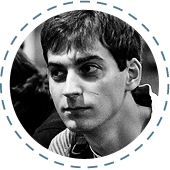
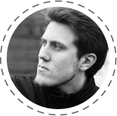
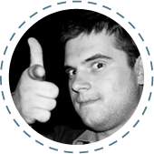
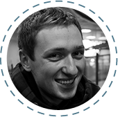
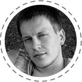
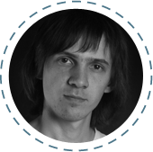
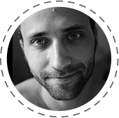

Команда GeekHub
-
Євген “Jack” Григор’єв Старший девелопер PHP
в Мaster of Code
Працює з рядом технологій, включаючи Symfony, Drupal, jQuery, Compass CSS, HAML, etc. Майстерність Євгена стоїть за такими проектами як Belvilla, Yes or No, Jongenvrij webshop, USGA та багато інших. У Geekhub Євген викладає Advanced CMS.
-
Тимофій “Common” Козак Технічний директор

у Presentain.Тимофій розвиває індустрію мобільних додатків. На його рахунку такі проекти як KandleFly, SecondChance, Yak Messenger, Presentain, MaximSoftware, MClean-design та багато інших. В Geekhub Тимофій викладає iOS.
-
Олег Пасько Старший девелопер

в Everlabs.com.Олег полюбляє розв'язувати бізнес-задачі в IT за допомогою RoR. На рахунку Олега такі проекти як shopius.ru, totravelme.ru, clickaway.ru та ряд інших цікавих проектів для різних компаній. У GeekHub Олег викладає Ruby on Rails.
-
Сергій Босовський Старший Android developer
в Master of Code.
Сергій займається питаннями інтерфейсів і обробки контенту, кастомними компонентами UI та інтеграцією андроїд аппів із зовнішніми сервісами. Сергій працював над такими проектами як Java Tech Journal, LifeChurch Android app та Yak messenger. У GeekHub Сергій викладає Java for Android.
-
Іван Хижняк Старший девелопер PHP.

У GeekHub викладає Advanced PHP.
-
Нік Курат Управляючий партнер
в Master of CodeНік займається розвитком бізнесу компанії Master of Code LLC та розвитком стартапу presentain.com . У складі Geekhub Нік викладає Project Management та працює над брендінгом та маркетингом проекту.
-
Валентин Ярмолатій Логістичний менеджер
в Master of Code
Валентин займається питаннями технічного забезпечення Geekhub.
-
Олег Зінченко TeamLead

в Exercise.com, Inc.Олег професiйно займаеться розробкою веб додаткiв на PHP з використанням сучасних фреймфоркiв. Адепт Symfony2. У GeekHub Олег викладає Advanced PHP.
-
Tim Phipps English Language Tutor

Since gaining his CELTA teaching qualification, Tim has specialised in private English lessons, meeting a wide range of student needs. At Geekhub Tim leads the Technical English course.
-
Юрій Курат CEO в N3w Normal

Юрій працює із командою розробників веб та кросс-платформових мобільних технологій. Його нещодавні проекти включають у себе stickyalbums.com, chewy.com. У GeekHub Юрій займається організацією та розвитком проекту.
-
Сергій Ключник Backend та frontend девелопер
в Master of Code.Сергій - активний учасник open source community, контріб'ютор jQuery Foundation, створив багато проектів з відкритим кодом на github. У повсякденній роботі Сергій займається як frontend, так і backend розробкою. У GeekHub Сергій викладає Javascript.
-
Олена Перекопська Менеджер проектів
в Master of Code.Олена має значний досвід у сфері контролю якості та управління проектами. У GeekHub викладає Quality Assurance.
-
Володимир Білоус Java EE/ Android developer
в SPD Ukraine.
Володимир є Java та Android розробником у SPD Ukraine. Його основний проект -- nimblecommerce.com У GeekHub Володимир викладає Java for Web.
-
Валерій Олексієнко Веб-розробник

в SPD-Ukraine.Backend та frontend веб-розробник. Основні технології, з якими працює: Spring (MVC, Security), Hibernate, mySql, MongoDB, jQuery, Ext.js Хоббі включають сноуборд, музика, mobile development. У GeekHub Валерій викладає Java for Web.
-
Богдан Халяпін Директор
в SPD-Ukraine.
Богдан керує компанією SPD-Ukraine та займається її розвитком. Має більше ніж 10 років досвіду з Java. У складі GeekHub Богдан є викладачем та координатором групи Java for Web.
-
Олександра Корнійчук Teamlead
у QAMadness.Олександра займається розвитком бізнесу, а також керує командою тестувальників у компанії QAMadness.
-
Альона Лісіцина Head Project Manager
в Master of Code.
Альона має науковий ступінь PhD та працює головним проектним менеджером у компанії Master of Code LLC. У Geekhub Альона викладає Project Management.
-
Богдан Данилюк Розробник

у TransferWise.Богдан розробник у компанії TransferWise. Прихильник швидких, динамічних та надійних рішень у розробці програмного забезпечення. Викладатиме курс улюбленої мови програмування та фреймворку - Groovy & Grails.
-
Павло Надолинський iOS девелопер
в Master of Code.За досить невеликий час роботи, Павло встиг прийняти участь у багатьох проектах та здобути неабиякий досвід у розробці iOS додатків. У GeekHub викладає iOS.
-
Дмитро Таряник Android developer
в Master of Code.
На рахунку Дмитра такі проекти як Heineken Nederland Magazine, LifeChurch Android app. У GeekHub викладає Java for Android.
-
Сергій Гичка Backend developer

в Master of Code.Сергій працює з такими технологіями як Symfony, Drupal, JS, Zend Framework, CodeIgniter. Його проекти включають InnoLaunch Platform, The VX, Fund for Gender Equality, UN Trust Fund to End Violence Against Women. У GeekHub Сергій викладає Advanced CMS.
-
Юра Батора Team Leader
в SPD-Ukraine.
Юра займається розробкою комерційних проектів на Java зі складною клієнт-серверною архітектурою. У GeekHub викладає Java for Web.
-
Сергій Поліщук Backend developer

в Exercise.com, Inc.Студент GeekHub у минулому, а зараз - backend девелопер в успішній продуктовій компанії США. Сергій полюбляє важкі задачі та прості рішення. У GeekHub Сергій викладає Advanced PHP.
-
Владислав Ящук Старший CMS девелопер
в Master of Code.
Влад має значний досвід у розробці веб-сайтів на базі CMS. У GeekHub викладає Advanced CMS.
-
Андрій Береза Java 7 Programmer
в SPD-Ukraine.
Андрій - сертифікований Java 7 Programmer з великим досвідом реалізації back-end та front-end, у тому числі на проектах створення фінансових систем. У GeekHub викладає Java for Web.